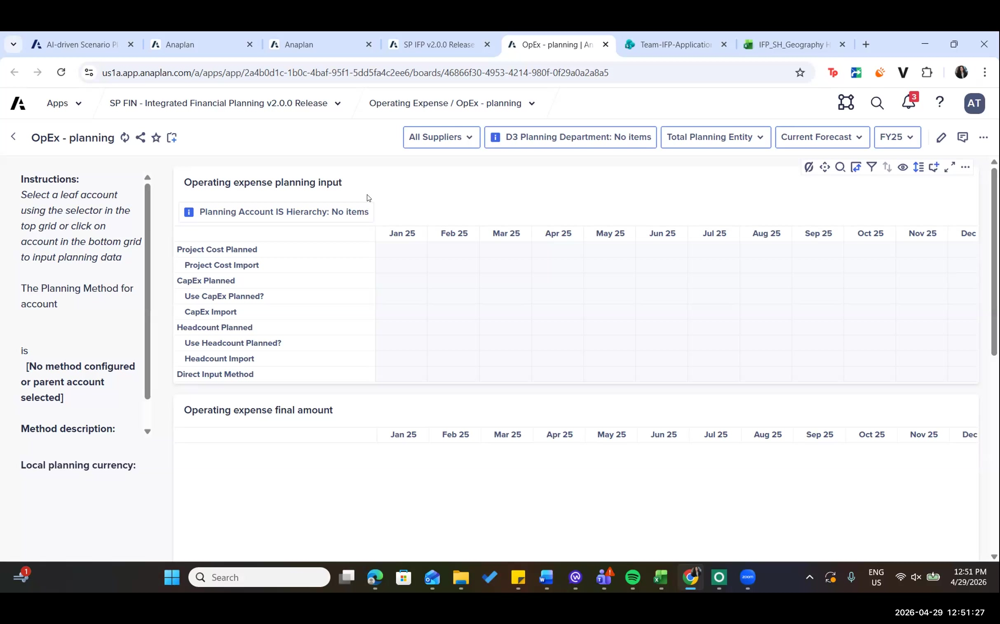
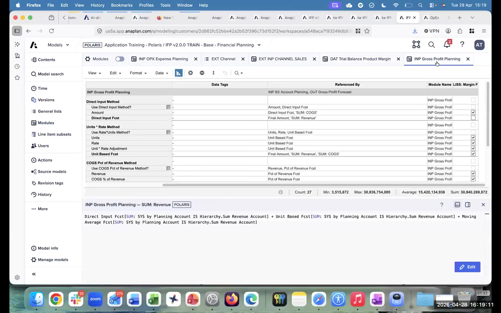
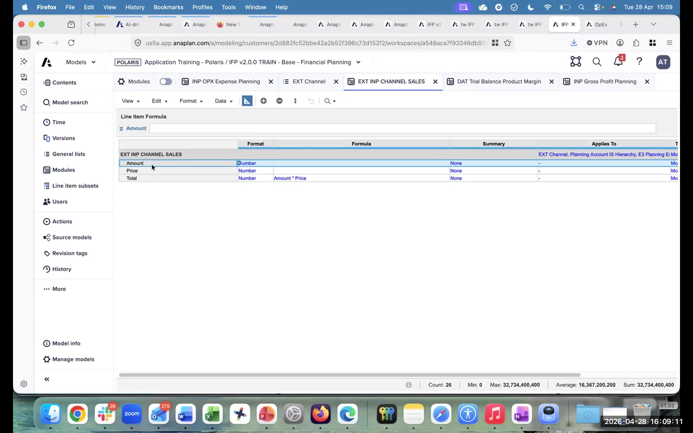
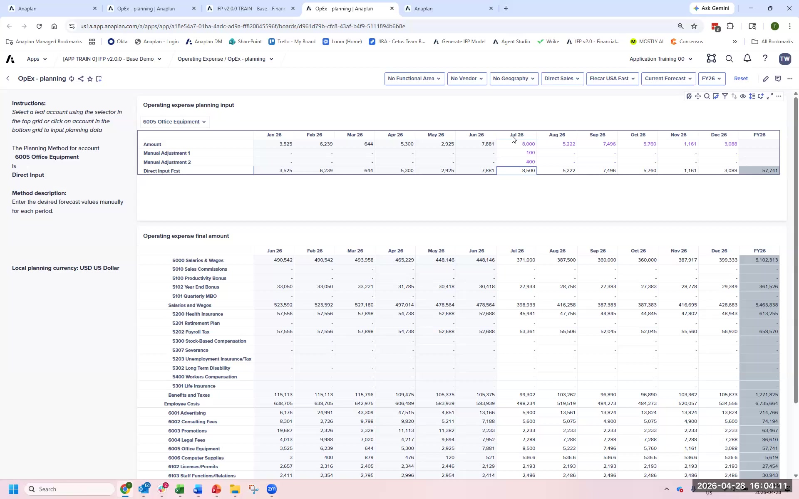

Resumen de extensiones
Los tres tipos de extensión, 7 mejores prácticas y los dos ejercicios
Esta es una traducción automática de la versión original en inglés. Para la versión autoritativa y más actualizada, consulte la versión en inglés. Reporte cualquier problema de traducción a su contacto Anaplan.
Qué son las extensiones
Las extensiones son adiciones o modificaciones específicas del cliente al modelo base IFP que el Application Framework Configurator no puede producir. Caen en tres categorías, y la categoría determina el riesgo y el enfoque.
| Tipo de extensión | Qué es | Riesgo de actualización | Cuándo usar |
|---|---|---|---|
| Configurar | Use el Application Framework Configurator para habilitar una capacidad incorporada | Ninguno: está soportado | Siempre intente esto primero. Si el Application Framework Configurator tiene un ajuste para ello, úselo. |
| Extender / conectar | Añadir nuevos Line Items, Módulos o Listas sin tocar las fórmulas del modelo base | Bajo: los elementos nuevos no son sobrescritos por las actualizaciones | Cuando el cliente necesita algo que el Application Framework Configurator no cubre, pero puede añadirlo sin cambiar la lógica del modelo base. |
| Enmendar / modificar / eliminar | Cambiar una fórmula, Lista o Módulo existente del modelo base | Alto: los cambios pueden perderse o romperse en la actualización | Último recurso. Documente cada override con un Data Tag. Mantenga documentación externa. |
Marque y revise la Extension FAQ en Seismic. Cubre mejores prácticas para documentar extensiones, qué sobrevive a las actualizaciones y cómo prepararse para los ciclos de actualización. Es una referencia esencial para el trabajo real de delivery.
7 mejores prácticas para extensiones IFP
Configurar primero
La configuración a través del Application Framework es la forma principal de definir la estructura de una aplicación basada en los inputs y requisitos del cliente.
Extender o conectar después
Las extensiones siempre deben ser aditivas, lo que significa que añaden nuevas capacidades sin cambiar la lógica existente.
Modificar con cuidado
Modificar objetos existentes, especialmente aquellos que no pueden configurarse, puede afectar tanto la configurabilidad como la actualizabilidad.
Eliminar con precaución
Eliminar componentes de una aplicación post-configurada puede crear esfuerzo adicional durante reconfiguraciones futuras o al adoptar una nueva versión de la aplicación.
Mantener una convención de nomenclatura consistente
Una nomenclatura consistente facilita el mantenimiento, soporte y actualización de las extensiones.
Agrupar extensiones relacionadas
Agrupar múltiples extensiones las hace más fáciles de identificar y gestionar, especialmente durante actualizaciones.
Documentar todas las extensiones
Todas las extensiones y modificaciones deben estar claramente documentadas.
Data Tags: créelos primero
Antes de hacer cualquier cambio de extensión a un modelo IFP, cree dos Data Tags: Extension (para todos los nuevos Line Items que añada) y Formula Override (para cualquier fórmula del modelo base que cambie). Estos tags son el único registro en el modelo de lo que ha cambiado. Sin ellos, un futuro consultor no tiene forma de saberlo.
Extensiones que este taller cubre
| Tipo de extensión | Requisito de negocio | Clasificación |
|---|---|---|
| Direct Input + Adjustments | El cliente quiere entrada directa + dos capas de ajuste para cuentas OpEx | Extender: añade nuevos Line Items, modifica la fórmula de final amount (marcada con Formula Override) |
| Método Headcount × Rate | Planear gastos como headcount × tarifa promedio + ajuste | Extender: añade nuevo método de planeación, nuevos Line Items, modifica la fórmula de final amount |
| Extensión del módulo de revenue | Modelo de revenue más detallado como un nuevo Módulo enganchado en P&L | Extender: nuevo Módulo conectado a los Módulos OUT existentes |
UX de planeación de OpEx: extensiones en contexto

Módulo INP OPX Expense Planning

Extensión EXT INP Channel Sales

Tablero de planeación de OpEx con extensiones

Los formula overrides en Line Items del modelo base son la acción de extensión de mayor riesgo. Cuando Anaplan publica una actualización IFP, los formula overrides pueden perderse o romperse. Siempre márquelos con el Data Tag Formula Override y documéntelos externamente. Después de cualquier actualización IFP, filtre por el tag Formula Override y revalide cada uno.